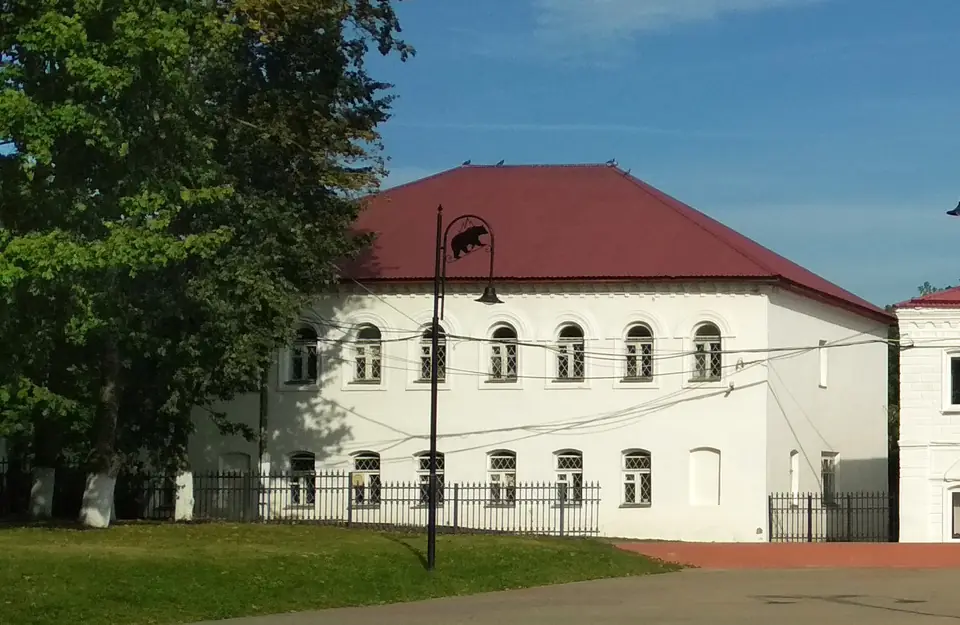

Фотография временно недоступнаФото: Sergey Sebelev, 2020 · CC BY-SA 4.0История · РузаРузский краеведческий музейМузей в купеческом доме XIX века знакомит с историей Рузы. В коллекциях представлены археологические находки, предметы быта, произведения искусства, фотографии и документы. Программу посещения можно дополнить городской экскурсией музея.Проложить маршрутОфициальная информация ↗